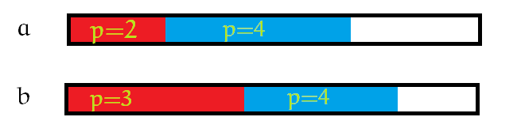
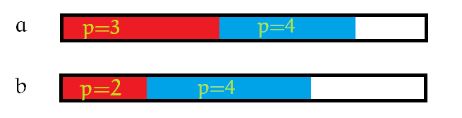

一道有趣的贪心题。
题目大意
给你两种瓷砖 a,b，每种瓷砖有n 块，每块瓷砖有两个属性：高度 h 和价值 p。
现在要求你把这些瓷砖重新排成两行（2×n）。前一行放瓷砖 b，后一行放瓷砖a。
要求从左到右 p 递增（单调不减），对于任意一个位置 i，后面的瓷砖要比前面的瓷砖高。
求一种方案或输出无解。
n≤5×105
题解
对于一段 p 相同的区间，我们可以将里面的瓷砖随意调换。
考虑如何贪心。
我们发现有两种不同的情况，我们的目的不同：

此时我们是想让匹配完 a 中p=2情况后，b中剩余的 p=3 的瓷砖的 h 尽量小。
我们可以将 a 中p=2的每块瓷砖都找到 b 中一个恰好比它小的瓷砖进行匹配。

此时我们是想让匹配完 b 中p=2的情况后 a 中剩余的 p=3 的瓷砖的 h 尽量大。
我们可以将 b 中p=2的每块瓷砖都找到 a 中一个恰好比它大的瓷砖进行匹配。
我们维护目前第 i 个位置可以填哪些数，如果 a 中可填的数比 b 中少，那么是情况一，否则就是情况二。
代码
1
2
3
4
5
6
7
8
9
10
11
12
13
14
15
16
17
18
19
20
21
22
23
24
25
26
27
28
29
30
31
32
33
34
35
36
37
38
39
40
41
42
43
44
45
46
47
48
49
50
51
52
53
54
55
56
57
58
59
60
61
62
63
64
65
66
67
68
69
70
71
72
73
74
75
76
77
78
79
80
81
82
83
84
85
86
87
88
89
90
91
92
93
94
95
96
97
98
99
100
101
102
103
104
105
106
107
108
109
| #include <cstdio>
#include <set>
#include <iostream>
#include <algorithm>
using namespace std;
const int inf = 0x3f3f3f3f;
const int maxn = 500005;
struct sxd
{
int p, h, id;
friend bool operator < (sxd a, sxd b) { return a.p < b.p; }
};
struct pii
{
int x, y;
friend bool operator < (pii a, pii b) { return a.x < b.x; }
pii (int x = 0, int y = 0) { this->x = x, this->y = y; }
};
multiset<pii> sta, stb;
int n;
sxd aa[maxn];
sxd bb[maxn];
int ansa[maxn];
int ansb[maxn];
int main()
{
scanf("%d", &n);
for(int i = 1; i <= n; ++i)
{
scanf("%d", &aa[i].p);
aa[i].id = i;
}
for(int i = 1; i <= n; ++i)
scanf("%d", &aa[i].h);
for(int i = 1; i <= n; ++i)
{
scanf("%d", &bb[i].p);
bb[i].id = i;
}
for(int i = 1; i <= n; ++i)
scanf("%d", &bb[i].h);
sort(aa + 1, aa + n + 1);
sort(bb + 1, bb + n + 1);
for(int i = 1, nowa = 0, nowb = 0; i <= n; ++i)
{
if(sta.empty())
{
nowa++;
sta.insert(pii(aa[nowa].h, aa[nowa].id));
while(nowa + 1 <= n && aa[nowa].p == aa[nowa + 1].p)
{
nowa++;
sta.insert(pii(aa[nowa].h, aa[nowa].id));
}
}
if(stb.empty())
{
nowb++;
stb.insert(pii(bb[nowb].h, bb[nowb].id));
while(nowb + 1 <= n && bb[nowb].p == bb[nowb + 1].p)
{
nowb++;
stb.insert(pii(bb[nowb].h, bb[nowb].id));
}
}
if(sta.size() < stb.size())
{
set<pii>::iterator it = stb.lower_bound(pii((sta.rbegin())->x, 0));
if(it == stb.begin())
{
puts("impossible");
return 0;
}
--it;
ansa[i] = (sta.rbegin())->y;
ansb[i] = it->y;
sta.erase(--sta.end());
stb.erase(it);
}
else
{
set<pii>::iterator it = sta.upper_bound(pii((stb.begin())->x, 0));
if(it == sta.end())
{
puts("impossible");
return 0;
}
ansa[i] = it->y;
ansb[i] = (stb.begin())->y;
sta.erase(it);
stb.erase(stb.begin());
}
}
for(int i = 1; i <= n; ++i)
printf("%d", ansa[i]);
puts("");
for(int i = 1; i <= n; ++i)
printf("%d ", ansb[i]);
return 0;
}
|